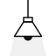
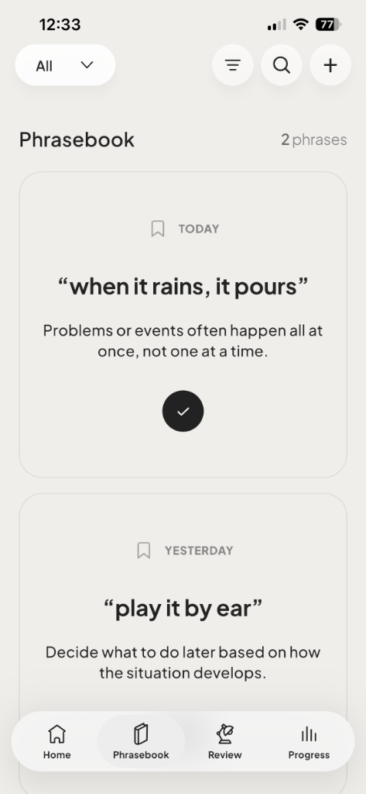
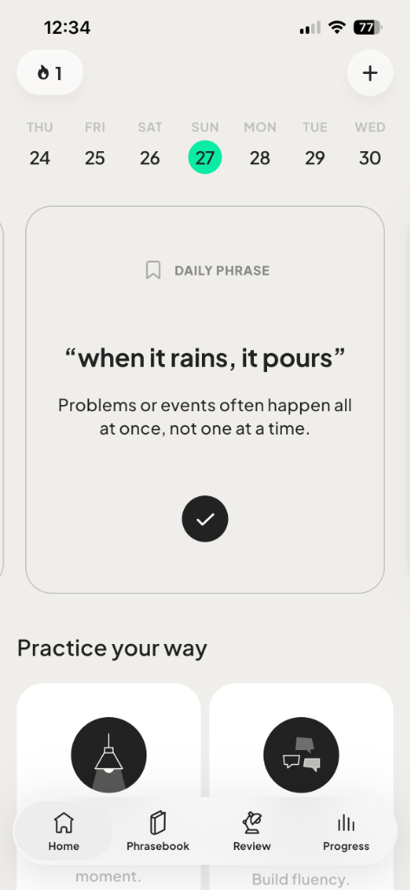
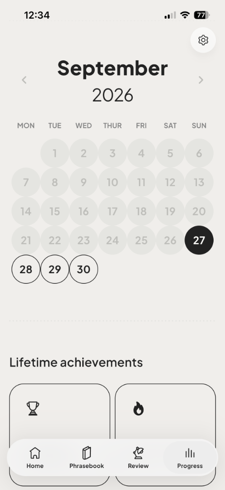
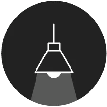
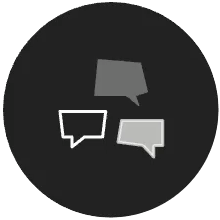
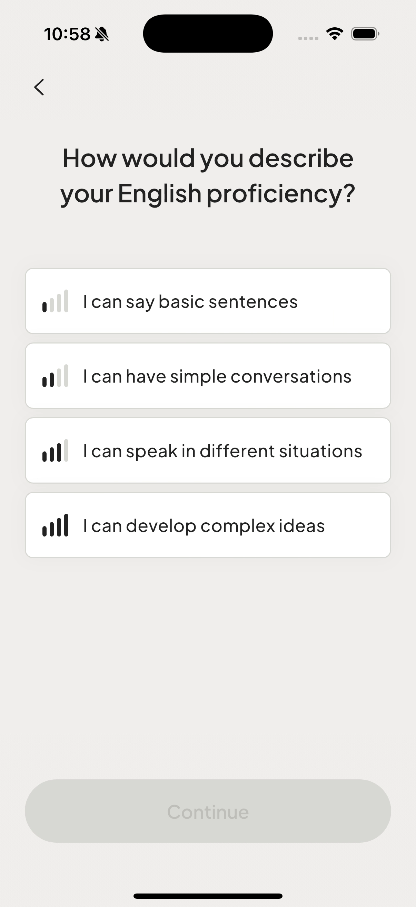
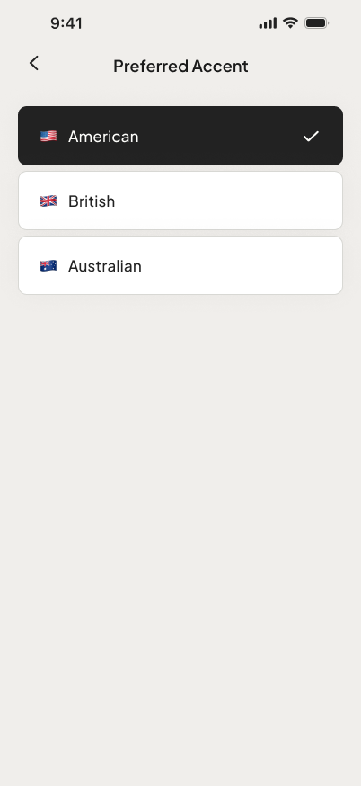

상사에게
소리 내어
말하세요.
마음속 생각을 영어로 말하세요.
매일 잠깐씩 투자해, 망설임 없이 자연스럽게 말하세요.



빠른 응답부터
전체 대화까지.
무엇이 잘됐는지 확인하고, 맞춤 제안을 받아보세요.

연습 모드
즉석 답변
무엇이 나올지 알 수 없습니다.
그 순간에 반응하세요. 즉석에서 답하세요.

연습 모드
대화 만들기
한 턴씩 주고받으세요.
대화를 계속 이어가세요.
복습
언제든 대화를 복습하세요.
바로 적용할 수 있는 다각도의 내 표현에 맞춘 피드백을 받아보세요.
준비하세요
가벼운 대화에.
연습하고 싶은 것을 선택하세요.
언제든 바꿀 수 있습니다.
표현장
하루 한 가지 표현.
소통의 폭을 넓히세요.
매일 새로운 표현이 도착합니다. 대화에서 언제 쓰는지 배워보세요.
📚 나만의 표현장을 만드세요.
기억하고 싶은 표현을 나에게 맞는 메모와 함께 보관하세요.
✨ 스마트 표현 검색기
기억나는 것을 입력하세요. radimoo가 자동으로 표현, 의미, 맥락을 찾아 표현장에 추가합니다.


개인화
내 수준에 맞춰 연습하세요.
선호하는 억양을 선택하세요.
내가 말하는 방식부터 듣는 소리까지, 나에게 맞는 연습을 하세요.